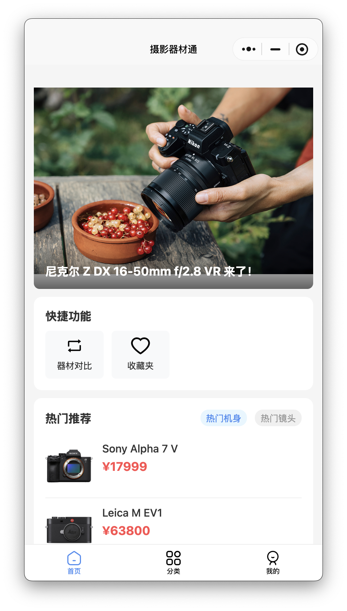
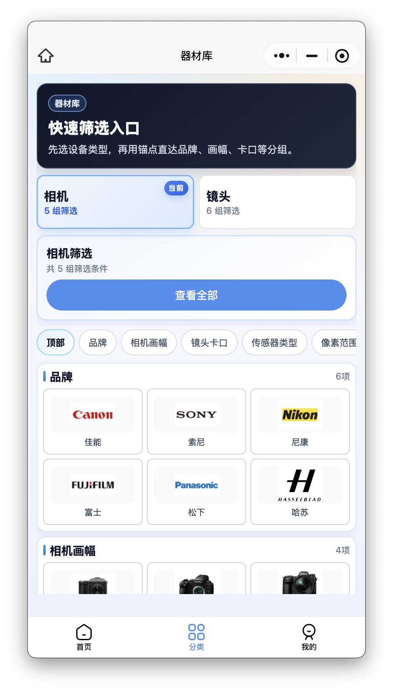
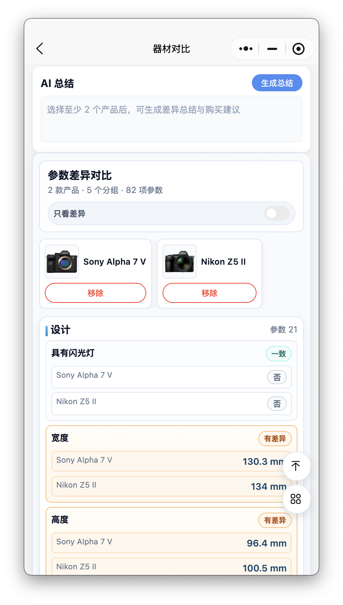
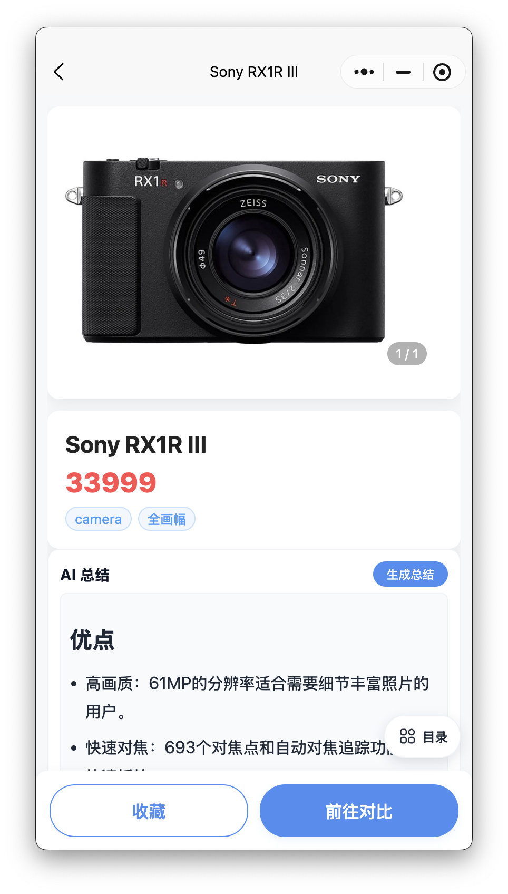

Featured Case
摄影器材通小程序
面向摄影爱好者的摄影器材服务项目，覆盖微信小程序、后台管理、服务端接口和器材数据整理。
摄影器材通小程序
面向摄影爱好者的摄影器材服务项目，覆盖微信小程序、后台管理、服务端接口和器材数据整理，帮助用户完成查找、对比、收藏和管理个人设备。




我负责的内容
负责小程序端核心页面设计与实现，包括首页推荐、器材库、详情、对比、收藏、浏览记录和我的设备。
负责后台管理功能整理与接入，覆盖相机管理、镜头管理、封面上传和 Banner 维护等内容运营能力。
负责 Spring Boot 服务端接口设计与联调，并处理摄影器材数据采集、清洗和结构化整理。
项目价值
这不是单一页面展示，而是一套从器材数据采集、内容维护到小程序消费的完整产品闭环。